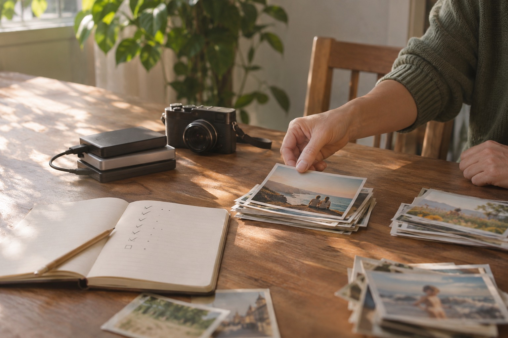

Momentro Guides · Organize footage
What to archive, trim and delete from family and travel footage
A gentler way to make room in a video collection—without treating every clip as a verdict on the day it came from.

Start with one kind decision: none of it has to become a film
When clips have sat on a phone or drive for a while, it is easy to imagine that every one needs an answer. Keep it. Edit it. Delete it. Right now.
It does not. A family birthday, a rainy train ride, or a week by the sea can leave behind hundreds of files. Most are simply part of the record. The job is not to judge the whole trip; it is to make the next time you look for it a little easier.
Archive is not the same as “important.” It can just mean: I do not need to decide about this today.
Archive the original collection before you try to improve it
Put the complete intake from the trip, celebration, or shared family folder somewhere you can find again. Keep the original names if they already contain dates. This is the safe home for the clips you may never watch closely but would hate to lose.
A useful archive folder can be plain: 2026-08 — coast — family week — original clips. It does not need to be beautifully sorted before you move on. The point is to separate preservation from editing.
That distinction matters especially when material came from more than one phone, camera, drone, or relative. Back it up first. Then make a smaller working selection.
Trim from the copy you want to watch
“Trim” sounds harsher than it is. You are not erasing a memory. You are choosing a shorter version that someone can actually sit down and enjoy.
For a first pass, pull out clips that carry a change, a feeling, or a bit of context: the first view from the train, a child arriving at the water, the toast that made everyone laugh, the quiet road home. A five-minute film does not need five minutes of every meal, every beach, or every attempt at the same group photo.
Keep the full clip in the archive if you are unsure. The selected copy is allowed to be selective.
Delete the files that make the collection harder to use
Deleting can be the smallest category. Start with what is clearly not a memory: accidental pocket recordings, fully black clips, repeated downloads, or a test shot that never became anything.
If two clips are almost identical, keep the one that feels steadier, clearer, or more alive. You do not have to compare them frame by frame. Choose, move on, and leave the rest for another day.
For anything that gives you pause—an imperfect clip with someone who matters, a piece of a place that has changed—archive it rather than forcing a decision. Storage is usually cheaper than regret.
Make a selected folder small enough to begin
Once the originals are safe, create a Selected folder for the footage that might become one story. It can be a travel film, a birthday recap, or a small collection of ordinary days. It does not need to represent everything.
That is the set Momentro is designed to work with on your computer. Start analysis, then leave the computer to do its work while you cook dinner, take a walk, or simply stop thinking about clips for a while. How long it takes depends on the amount of footage and your computer. Later, you can review the draft, make a small change if you want, and export when it feels ready.
A three-question pause for the difficult clips
- Would I be sorry if this disappeared? If yes, archive it.
- Would I enjoy seeing this in the finished film? If yes, select it.
- Is this only taking up attention, not preserving a memory? If yes, it can go.
You can answer only a few clips at a time. A usable archive is built by returning to it gently, not by winning one heroic Sunday afternoon.
Make a film from the clips you chose to keep.
Momentro helps turn a selected set of family or travel clips into a draft you can review and export on your computer.